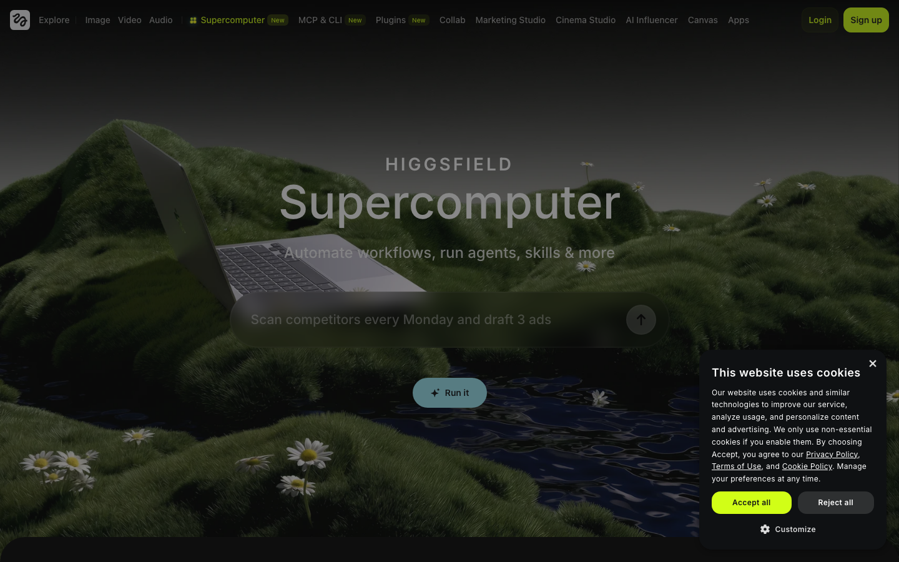

오늘은 "AI 에이전트 하나로 브랜드를 통째로 런칭"하는 전과정을 자동 오케스트레이션으로 경험합니다. Day 6~7에서는 오늘 배운 흐름을 바탕으로 본인의 실제 사업에 직접 적용·정교화하게 됩니다.
Part 1 · Supercomputer란?
0:00 – 0:25 · 25분Supercomputer = 두뇌를 장착한 힉스필드
Supercomputer는 단순한 이미지·영상 생성기가 아닙니다. 클라우드 네이티브 자가학습(self-learning) 에이전트입니다. 시장의 모든 모델을 오케스트레이션해 기획부터 완성물까지 end-to-end로 실행합니다.
공식 정의 (힉스필드 공식 Supercomputer 튜토리얼):
- 클라우드 네이티브 자가학습 에이전트 — 내 작업 패턴을 스스로 학습해 다음 작업에 반영
- 40개+ 내장 도구 — 이미지·영상·리서치·문서 등 작업 도구를 에이전트가 직접 호출
- 3계층 메모리 — 단기·작업·영속 메모리로 브랜드 톤·캐릭터·제품을 일관되게 유지
- 모든 모델 오케스트레이션 — 시장의 여러 모델을 작업마다 자동 선택해 한 번에 묶어 실행
- end-to-end 실행 — 자연어 한 문장으로 계획·모델 선택·완성물까지 한 흐름으로
핵심 컨셉: 원하는 걸 자연어로 말하면 — Supercomputer가 스스로 계획을 세우고, 모델·프리셋을 고르고, 완성물까지 만들어냅니다. 제품 하나로 UGC·광고 100가지 변형을 몇 분 안에 뽑아낼 수 있습니다.
브랜드 빌딩 = 한 챗이 대체하는 것
공식 튜토리얼에 따르면, 브랜드를 0부터 만드는 일은 원래 5명 이상의 전문가 · 수천 달러 · 수 주가 걸렸습니다. Supercomputer는 이 전체를 한 챗(one chat)으로 대체합니다.
| 원래 (사람·시간·비용) | Supercomputer 한 챗 |
|---|---|
| 니치 리서치 (애널리스트) | ✅ 한 챗 안에서 |
| 브랜드 아이덴티티 (브랜드 디자이너) | ✅ 한 챗 안에서 |
| 제품 사진 (제품 포토그래퍼) | ✅ 한 챗 안에서 |
| 리스팅·카피 (카피라이터) | ✅ 한 챗 안에서 |
| 영상 광고 (영상 편집자) | ✅ 한 챗 안에서 |
| 유통 전략 (마케팅 전략가) | ✅ 한 챗 안에서 |
→ 5명+ 전문가, 수천 달러, 수 주 → 한 챗
이 강의의 프롬프트는 힉스필드 공식 채널의 Supercomputer 시연(브랜드 런칭·마케팅 워크플로)에서 실제로 사용된 명령을 정리한 것입니다. 영상 시청 대신 아래 프롬프트를 직접 따라 입력하며 실습합니다.
접속 + 화면 구성
접속: higgsfield.ai에서 Supercomputer로 진입합니다.
좌측 사이드바 — 작업을 떠받치는 5개 영역:
퀵스타트 버튼 — 자주 쓰는 워크플로를 한 클릭으로 시작:
오케스트레이터 = Google Gemini입니다. 사용자가 모델·프롬프트를 신경 쓸 필요 없이, Gemini가 작업마다 GPT-5.5 · Claude Opus 4.7 · Gemini 3.1 Pro · Grok 등 여러 모델을 자동 선택(라우팅)합니다.
왜 Supercomputer인가 — 핵심 특징
- 모델 자동 선택 — 작업마다 최적 모델을 라우팅하고, 파라미터 튜닝·재시도까지 자동으로 처리
- 실제 프레임 분석 — 이미지·영상을 텍스트 요약이 아니라 실제 프레임으로 직접 분석해 훅·페이싱을 파악
- skills — 힉스필드 팀이 만든 프로덕션 워크플로 + 내 작업 패턴을 자동 학습해 개인 스킬로 저장
- MCP import — 다른 에이전트(Claude·Hermes·OpenClaw)의 메모리·스킬을 2클릭으로 가져옴 (보너스 Day 9 연계)
아래는 Supercomputer 실제 화면(강사 캡처)입니다. 위에서 설명한 사이드바·퀵스타트 버튼을 직접 찾아보세요.

웹 UI 수작업 vs Supercomputer 오케스트레이션
| 항목 | 웹 UI 수작업 (Day 1~4 방식) | Supercomputer 오케스트레이션 |
|---|---|---|
| 작업 단위 | 이미지 1장 · 영상 1편씩 직접 클릭 | ✅ "런칭 전과정"을 한 명령으로 |
| 모델·프리셋 선택 | 사람이 매번 직접 고름 | ✅ 에이전트가 목표에 맞게 자동 선택 |
| 변형 100개 생성 | 100번 반복 클릭 (수 시간) | ✅ 배치로 몇 분 |
| 브랜드 일관성 | 매번 같은 설명 타이핑 | ✅ 영속 메모리가 자동 유지 |
| 기획·전략 문서 | 별도 도구·수기 작성 | ✅ 같은 에이전트가 기획서·전략까지 |
| 적합한 상황 | 한 컷에 공들이는 정밀 작업 | 브랜드 런칭처럼 다단계·대량 작업 |
오늘의 위치: 이 강의는 자동·전과정 오케스트레이션을 한 바퀴 도는 날입니다. Day 6~7은 이를 바탕으로 직접 자기 사업에 적용·정교화합니다. 오늘은 "어떻게 흘러가는지"를 끝까지 체험하는 게 목표입니다.
Part 2 · 브랜드 런칭 전과정 5단계 (개념)
0:25 – 1:05 · 40분여기서는 5단계가 무엇을·왜 하는지만 개념으로 짚습니다. 실제 프롬프트(복사 버튼)와 따라 하기는 아래 🚀 통합 실습 "내 브랜드 0→런칭"에서 단계별로 직접 진행합니다. 모든 프롬프트는 힉스필드 공식 Supercomputer 튜토리얼에서 쓰인 명령입니다.
| 단계 | 무엇을 / 왜 | 출력 |
|---|---|---|
| ① 브랜드 생성 | 단 한 문장으로 브랜드 전체를 만든다. 이후 모든 단계의 영속 메모리 기준이 됨 | 이름·로고·제품 사진·소셜 포스트·영상 광고 |
| ② 학습 + 시장조사 | URL로 브랜드를 학습시키고, TikTok·Instagram에서 뜨는 것을 리서치. 실제 프레임으로 분석해 훅·페이싱까지 파악 | 브랜드 톤 메모리 + 니치 바이럴 패턴 |
| ③ 바이럴 리서치·전략 | 찾은 바이럴 포맷을 그대로 베끼지 않고 내 브랜드용으로 리빌드 | 재구성된 콘텐츠 방향 + 필요 소재 목록 |
| ④ 광고 소재 | 리빌드 방향대로 제품 광고 이미지 세트를 한 번에 대량 생성. 브랜드 톤 자동 유지 | 제품컷·UGC·키비주얼 (비율별) |
| ⑤ 영상 | 소재를 움직이는 영상으로. 9:16 숏폼·16:9 광고 + 1분 스토리 영상. 긴 영상은 Personal Clipper로 절단 | 숏폼·광고·스토리 영상 |
각 단계의 출력이 다음 단계의 입력으로 끊김 없이 이어집니다. ④의 가장 강한 컷이 ⑤ 영상의 첫 프레임이 되는 식 — 이 연결이 오케스트레이션의 핵심입니다.
Part 3 · Claude Code MCP로 Supercomputer 워크플로
1:05 – 1:25 · 20분자연어로 전 단계를 한 번에 묶기
지금까지의 5단계를 매번 따로 명령하지 않고, Claude Code의 MCP 연결을 통해 하나의 워크플로로 묶어 실행할 수 있습니다. 채팅창에서 "브랜드 런칭 전과정을 돌려줘"라고 말하면 에이전트가 ①~⑤를 순서대로 진행합니다.
- 폴링(polling) — 영상·이미지 생성에는 시간이 걸립니다. 에이전트가 작업 상태를 주기적으로 확인하며 완료될 때까지 기다립니다.
- 배치(batch) — 소재 10종, 영상 3편처럼 여러 개를 한 요청으로 묶어 동시에 처리합니다.
내 [카테고리] 브랜드 런칭 전과정을 진행해줘.
순서대로:
1) 브랜드 기획서 작성
2) 시장조사 요약
3) 4주 런칭 전략
4) 광고 소재 5종 이상 생성 (배치)
5) 9:16 숏폼 1편 이상 생성
각 단계 결과를 보여주고, 영상은 완료될 때까지 상태를 확인(폴링)해줘.
MCP 연결·CLI 설정의 상세는 보너스 강의 ⭐ MCP (Day 9)에서 다룹니다. 오늘은 "자연어 한 명령으로 묶을 수 있다"는 개념만 잡으면 충분합니다.
내 브랜드 0→런칭 (통합)
1:30 – 4:00 · 2h 30m오늘 실습은 하나의 연속 프로젝트입니다. 본인 브랜드 1개를 정해 0단계부터 런칭 패키지까지 쭉 끌고 갑니다. 각 단계의 결과가 다음 단계 입력이 되므로 순서대로 진행하세요. 모든 프롬프트는 힉스필드 공식 Supercomputer 튜토리얼 기준 — 그대로 복사해 채팅창에 붙여넣으면 됩니다.
브랜드 정하기
10분무엇을·왜 하나요?
나머지 5단계를 끌고 갈 브랜드 1개를 확정합니다. 카테고리·타깃·한 줄 컨셉만 메모하면 충분합니다. 이 메모가 1단계 생성 프롬프트의 입력이 됩니다.
- 카테고리 — 예: 친환경 텀블러, 비건 스킨케어, 홈카페 도구, 반려동물 간식
- 타깃 — 예: 20대 직장인, 30대 1인 가구
- 한 줄 컨셉 — 예: "출근길에 들고 다니는 친환경 텀블러"
🎯 0단계 체크포인트
- 카테고리·타깃·한 줄 컨셉 메모 완료
- 이 브랜드 1개를 오늘 끝까지 끌고 가기로 확정
브랜드 생성
30분 · 한 문장으로 브랜드 전체무엇을·왜 하나요?
런칭의 토대입니다. 공식 튜토리얼에서는 단 한 문장으로 브랜드 이름·로고·제품 사진·소셜 포스트·영상 광고까지 통째로 만들어냈습니다. 0단계에서 정한 카테고리만 넣으면 됩니다. 이 결과가 이후 모든 단계의 영속 메모리 기준이 됩니다.
[운동화] 브랜드 전체를 만들어줘 — 이름, 로고, 제품 사진, 소셜 포스트, 영상 광고 3종.
Create a full [sneaker] brand — name, logo, product photos, social posts, and three styles of video ads.
[운동화]를 0단계에서 정한 본인 카테고리로 교체하세요.
예상 결과: 브랜드명·로고 시안·제품 사진 세트·소셜 포스트 초안·영상 광고 3종이 한 번에 생성됩니다. 마음에 드는 조합을 골라 "이 설정을 기억하고 이후 작업에 반영해줘"로 영속 메모리에 고정합니다.
🎯 1단계 체크포인트
- ① 브랜드 생성 프롬프트 실행 → 브랜드 한 세트 받음 (이름·로고·제품 사진·소셜 포스트)
- 마음에 드는 조합 선택 + "이 설정을 기억해줘"로 메모리 고정
학습 + 시장조사
30분 · URL 학습 · 트렌드 리서치무엇을·왜 하나요?
이미 사이트가 있다면 URL로 브랜드를 학습시키고, 동시에 TikTok·Instagram에서 잘 되는 콘텐츠를 리서치해 "지금 내 니치에서 뜨는 것"을 찾습니다. Supercomputer는 텍스트 요약이 아니라 실제 프레임으로 콘텐츠를 분석하므로 훅·페이싱까지 짚어줍니다.
이 [URL]로 내 브랜드를 학습하고, TikTok·Instagram에서 잘 되는 [카테고리] 콘텐츠를 리서치해서 지금 내 니치에서 뜨는 걸 찾아줘.
Learn my brand from this URL, research top performing fashion content on TikTok and Instagram, and find what's viral in my niche right now.
예상 결과: 내 브랜드 톤이 메모리에 학습되고, 니치에서 바이럴 중인 포맷·훅·페이싱 패턴이 정리됩니다. 다음 단계 "바이럴 리빌드"의 입력이 됩니다.
🎯 2단계 체크포인트
- ② 학습·시장조사 실행 → 니치에서 뜨는 포맷 리서치 확보
- "지금 내 니치에서 뜨는 포맷"을 1문장으로 메모
바이럴 리서치·전략 (리빌드)
20분 · 바이럴 포맷 재구성무엇을·왜 하나요?
2단계에서 찾은 바이럴 포맷을 그대로 베끼지 않고, 내 브랜드용으로 다시 만듭니다(리빌드). Supercomputer가 잘 된 콘텐츠의 훅·구조·페이싱을 분석해 우리 브랜드 톤으로 재구성한 전략·소재 방향을 제안합니다.
내 니치에서 바이럴 중인 포맷을 내 브랜드용으로 다시 만들어줘.
Rebuild what's going viral in my niche for my brand.
여기서 나온 "재구성된 콘텐츠 방향·필요 소재"가 곧바로 4단계 광고 소재의 입력이 됩니다.
🎯 3단계 체크포인트
- ③ 바이럴 리빌드 실행 → 브랜드용 재구성 방향 확보
- 4단계에서 만들 "필요 광고 소재 목록" 추출
광고 소재
30분 · 제품 광고 이미지 세트 일괄무엇을·왜 하나요?
리빌드한 방향대로 제품 광고 이미지 세트를 한 번에 생성합니다. 기억한 브랜드 톤을 그대로 유지하므로 제품 하나로 수십 개 변형이 가능합니다. 공식 튜토리얼에서는 런칭 소재를 이미지·숏폼·광고로 일괄 생성했습니다 — 이 단계는 그중 이미지 부분입니다.
제품 이미지가 없으면 샘플 에셋 팩의 제품 컷을 사용하거나, Supercomputer에게 "이 카테고리에 어울리는 제품 컷을 먼저 만들어줘"로 시작하세요.
위 결과로 제품 광고 이미지 세트를 만들어줘. 기억한 브랜드 색감·톤을 유지하고, 제품컷·UGC·키비주얼을 섞어서 9:16과 1:1 둘 다 5종 이상 뽑아줘.
예상 결과: 브랜드 톤이 통일된 제품컷·UGC·키비주얼이 비율별로 한 번에 생성됩니다. 그중 가장 강한 컷이 다음 단계(5단계 영상)의 첫 프레임이 됩니다.
결과 예시 — 강사 생성 이미지 (제품·인물 소재)


위 키프레임 이미지는 다음 단계(5단계 영상)의 첫 프레임으로 그대로 넘어갑니다. 소재와 영상이 끊기지 않고 이어지는 게 오케스트레이션의 핵심입니다.
🎯 4단계 체크포인트
- ④ 광고 이미지 세트 실행 → 광고 소재 5종 이상 생성 (제품컷·UGC·키비주얼)
- 브랜드 톤(색감·무드) 일관성 확인 + 영상용 키프레임 1장 선정
런칭 영상
30분 · 숏폼·광고 (+ 1분 스토리 영상)무엇을·왜 하나요?
마지막으로 4단계의 소재를 움직이는 영상으로 바꿉니다. 9:16 숏폼 + 16:9 광고 영상을 한 명령으로 생성하고, 가진 긴 영상이 있다면 Personal Clipper로 베스트 순간만 잘라 숏폼으로 만듭니다. Personal Clipper는 키워드·무음 컷이 아니라 프레임 단위로 시청해 에너지·훅을 감지합니다.
위에서 만든 소재로 9:16 숏폼 3편과 16:9 광고 1편을 만들어줘. 키프레임 이미지를 첫 프레임으로 쓰고, 브랜드 톤·색감을 모든 영상에 통일해줘. 완성되면 가장 바이럴할 순서로 정렬해줘.
Personal Clipper — 긴 영상을 숏폼으로
이미 가진 긴 영상(팟캐스트·인터뷰·라이브)이 있다면, 명령 끝에 유튜브 링크를 붙여넣어 베스트 순간만 9:16 릴스로 잘라낼 수 있습니다.
이 [유튜브 링크]에서 베스트 순간들을 찾아 9:16 릴스로 만들어줘. 자동 자막과 첫 1초 훅 포함.
Find the best moments in this podcast and turn them into 9:16 reels with auto captions and a hook in the first second.
⭐ 1분 스토리 영상 워크플로 (선택)
한 문장 → 1분짜리 이어 붙인 애니메이션
공식 튜토리얼의 1분 스토리 영상 기능입니다. 한 문장으로 컨셉만 주면 Supercomputer가 키프레임 → 스토리 컨셉 제안 → 캐릭터·프롭·로케이션 확정 → 15초 클립 생성 → 자동으로 하나로 이어붙이기(stitch)까지 진행합니다.
1분짜리 애니메이션 영상 만들어줘 — [컨셉: 예: 행성을 넘나들며 몬스터와 싸우는 히어로]
I want a 1-minute animated video, [concept].
Supercomputer가 진행하는 5단계 (자동)
- 1키프레임 먼저 생성
영상의 핵심 장면을 이미지로 먼저 뽑아 방향을 잡음
- 2스토리 컨셉 3개 제안
같은 컨셉을 풀어낼 서로 다른 스토리 방향 3가지를 제시
- 3사용자가 'concept 1' 선택
마음에 드는 컨셉 하나를 고르면 그 방향으로 확정
- 4캐릭터 시트·프롭 시트·로케이션 확정
일관성을 위해 등장 캐릭터·소품·배경을 시트로 고정
- 515초 클립 생성 → 자동 stitch
15초 단위 클립들을 만든 뒤 하나의 1분 영상으로 자동으로 이어붙임
예상 결과: 첫 1초 훅 + 자동 자막이 들어간 9:16 숏폼·16:9 광고와, 선택 시 캐릭터·배경이 일관된 1분 스토리 영상이 완성됩니다. 5단계를 모두 거치면 — 브랜드부터 완성 영상까지 런칭 패키지 한 세트가 만들어집니다. 이게 오늘의 최종 산출물입니다.
🎯 5단계 체크포인트
- ⑤ 영상 생성 실행 → 9:16 숏폼 1편 이상 완성 (키프레임을 첫 프레임으로)
- 첫 3초 훅 + 마무리 CTA 확인
- (선택) 1분 스토리 영상 워크플로 실행 → concept 선택 → 자동 stitch까지 완료
✅ 통합 체크리스트 — 런칭 패키지 완성도
- 0단계 · 브랜드 카테고리·타깃·컨셉 확정
- 1단계 · 브랜드 한 세트(이름·로고·제품 사진·소셜 포스트) 생성
- 2단계 · URL 학습 + 니치 트렌드 리서치 확보
- 3단계 · 바이럴 포맷을 내 브랜드용으로 리빌드
- 4단계 · 광고 소재 5종 이상 생성 + 키프레임 선정
- 5단계 · 런칭 영상 1편 이상 (+ 선택: 1분 스토리 영상)
- 전체 산출물 한 폴더로 정리 → 최종 과제 제출 준비
내 브랜드 런칭 패키지 (Day 5)
위 통합 프로젝트의 0~5단계 결과물을 하나의 런칭 패키지로 묶어 제출합니다. 이것이 Day 5의 최종 과제 — "내 브랜드 런칭 패키지"입니다.
제출 구성 (0~5단계 결과물)
| 항목 | 나온 단계 | 기준 |
|---|---|---|
| 브랜드 기획 | 0·1단계 | 카테고리·타깃·한 줄 컨셉 + 이름·로고·톤·슬로건 |
| 시장조사 | 2단계 | 경쟁사·트렌드 + 니치에서 뜨는 포맷 1문장 |
| 런칭 전략 | 3단계 | 바이럴 리빌드 방향 + 채널별 적용 포인트 |
| 광고 소재 | 4단계 | 5종 이상 (제품컷·UGC·키비주얼) |
| 런칭 영상 | 5단계 | 1편 이상 (9:16 숏폼 권장) + 선택: 1분 스토리 영상 |
| 명령 기록 | 전 단계 | 사용한 Supercomputer/자연어 명령 캡처 또는 텍스트 |
| 제출처 | — | 강사 안내 채널 |
📤 제출 체크리스트
- 브랜드 기획(0·1단계) + 시장조사(2단계) 정리 완료
- 런칭 전략(3단계 리빌드 방향 + 채널별 포인트) 작성 완료
- 광고 소재 5종 이상(4단계) 생성 완료
- 런칭 영상 1편 이상(5단계, 9:16) 완성 — 선택: 1분 스토리 영상 1편
- 사용한 자연어 명령 기록 + 강사 채널 제출 완료
다음 단계 예고: 오늘은 전과정을 "체험"했습니다. Day 6~7에서는 오늘의 흐름을 본인의 실제 사업에 직접 적용하고, 결과물을 정교화합니다. 오늘 만든 패키지가 그 출발점이 됩니다.
막혔을 때
| 이런 상황이면 | 이렇게 해보세요 |
|---|---|
| Supercomputer 메뉴가 보이지 않음 | 계정 플랜에 따라 접근 제한이 있을 수 있음. 강사에게 문의하거나, 아래 "수동 대체" 흐름으로 진행 |
| ① 브랜드 생성이 한 번에 안 됨 | ① 프롬프트를 이름·로고·제품 사진 등 항목별로 쪼개 순서대로 요청. 결과를 힉스필드 작업의 톤 기준으로 사용 |
| ② 학습할 URL이 없음 / 리서치가 부실함 | URL 부분을 빼고 카테고리만 남겨 리서치만 실행. 경쟁사 이름 2~3개를 직접 적어 추가하면 품질이 올라감 |
| ③ 바이럴 리빌드가 너무 일반적임 | 1단계의 브랜드 톤과 2단계의 "뜨는 포맷 1문장"을 명령에 다시 붙여넣어 재요청 |
| ④ 광고 소재 배치가 안 됨 | 한 번에 안 되면 종류별로 나눠 요청 (제품컷 → UGC → 키비주얼). Soul/Cinema Studio로 1장씩 수동 생성도 가능 |
| 광고 소재 톤이 제각각임 | "1단계에서 정한 브랜드 색감·톤을 유지해줘"를 명령에 명시해 재생성 |
| ⑤ 영상 생성이 오래 걸림 / 멈춤 | 정상입니다. 폴링으로 기다림. 너무 길면 숏폼 1편으로 범위를 줄여 재요청 |
| 1분 스토리 영상이 한 번에 안 나옴 | 정상입니다. 키프레임 → 컨셉 제안 → concept 선택 → 시트 확정 → 클립 stitch 순으로 진행됨. 컨셉 선택 단계에서 'concept 1'처럼 골라줘야 다음으로 넘어감 |
| 영상에 쓸 키프레임이 없음 | 4단계에서 만든 제품컷·UGC 중 가장 강한 1장을 첫 프레임으로 지정 |
| 전과정 한 명령(MCP)이 중간에 끊김 | 5단계를 한 번에 묶지 말고, 단계별 프롬프트(①~⑤)를 순서대로 따로 실행 |